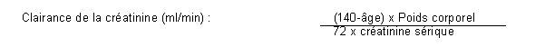

RÉSUMÉ DES CARACTÉRISTIQUES DU PRODUIT
ANSM - Mis à jour le : 01/07/2014
RANITIDINE MYLAN 300 mg, comprimé pelliculé
2. COMPOSITION QUALITATIVE ET QUANTITATIVE
Ranitidine (chlorhydrate) ............................................................................................................... 336,00 mg
Quantité correspondant à ranitidine ............................................................................................... 300,00 mg
Pour un comprimé pelliculé.
Pour la liste complète des excipients, voir rubrique 6.1.
Comprimé pelliculé.
4.1. Indications thérapeutiques
La ranitidine est indiquée dans le traitement de l'ulcère gastrique et duodénal, en prophylaxie de l'ulcère duodénal, dans l'œsophagite par reflux gastro-œsophagien et dans le traitement du syndrome de Zollinger-Ellison.
4.2. Posologie et mode d'administration
Traitement de l'ulcère gastrique et duodénal: 150 mg 2 fois par jour ou 300 mg après le dîner ou au coucher. Pour l'ulcère duodénal, la posologie peut être augmentée à 300 mg, 2 fois par jour pendant 4 semaines au maximum.
Traitement prophylactique de l'ulcère duodénal: 150 mg après le dîner ou au coucher.
Œsophagite par reflux gastro-œsophagien: 300 mg par jour ou 150 mg, 2 fois par jour pendant 4 à 8 semaines ou si nécessaire jusqu'à 12 semaines.
Syndrome de Zollinger-Ellison! 150 mg 3 à 4 fois par jour. La posologie peut être augmentée à 300 mg 4 fois par jour. Des doses plus élevées peuvent être administrées. Des traitements utilisant des doses allant jusqu'à 6 g/jour ont été tolérés.
La posologie devra être réduite chez les patients présentant une insuffisance rénale.
Selon les valeurs de la clairance de la créatinine (ml/min) ou de la créatinine sérique, les posologies suivantes sont recommandées:
|
Clairance de la créatinine |
Créatinine sérique (approx*) |
Posologie par jour (orale) |
|
jusqu'à 30 |
supérieure à 2,6 |
150 mg toutes les 24 heures |
|
supérieure à 30 |
inférieure à 2,6 |
300 mg toutes les 24 heures |
*Les teneurs en créatinine sérique sont présentées à titre indicatif et ne reflètent pas le même degré d'insuffisance chez tous les patients chez lesquels la fonction rénale est réduite. Ceci concerne notamment les sujets âgés, chez lesquels la fonction rénale est surestimée par les concentrations en créatinine sérique.
La formule suivante peut être utilisée pour estimer la clairance de la créatinine à partir des teneurs en créatinine sérique mesurées (mg/100ml), l'âge (en année) et le poids corporel (en kg). Chez les femmes, le résultat doit être multiplié par le facteur 0,85.

Les patients dialysés devront recevoir la dose de ranitidine la plus basse à l'issue de la dialyse, car la ranitidine n'est pas éliminée par ce processus.
La ranitidine est contre-indiquée chez les patients présentant une hypersensibilité connue au principe actif ou à tout autre constituant du médicament. Elle est également contre-indiquée chez les enfants (de moins de 15 ans), les données cliniques étant insuffisantes dans cette population.
De rares cas cliniques ont évoqués un lien entre porphyrie aiguë et ranitidine. Il convient de ne pas traiter les patients ayant des antécédents de porphyrie aiguë avec de la ranitidine.
4.4. Mises en garde spéciales et précautions d'emploi
Comme la ranitidine est éliminée par voie rénale, il convient de réduire la posologie chez les patients présentant une insuffisance rénale. Une certaine prudence s'impose chez les sujets âgés, chez lesquels la fonction rénale peut être réduite (voir rubrique 4.2.).
Avant de débuter le traitement, pour toute ulcération gastrique, il convient d'exclure par biopsie si possible, toute lésion maligne. Le traitement peut masquer les symptômes de la malignité, retardant son diagnostic.
4.5. Interactions avec d'autres médicaments et autres formes d'interactions
Les anti-acides peuvent diminuer l'absorption gastro-intestinal des antagonistes histaminiques des récepteurs H2.
Les anti-acides ne doivent pas être pris simultanément avec le médicament, mais avec un intervalle de 2 heures, si possible.
Le traitement par la ranitidine augmente le taux sérique du fluorouracile.
La ranitidine ne doit être utilisée pendant la grossesse que si nécessaire, après évaluation du rapport bénéfice/risque. Bien qu'une étude de cohorte n'a pas mis en évidence d'augmentation du risque malformatif à la naissance suite à l'utilisation de la ranitidine pendant le 1er trimestre de la grossesse, l'expérience clinique reste encore limitée. La ranitidine doit être utilisée avec précaution pendant la grossesse.
Comme la ranitidine est excrétée dans le lait maternel, il convient d'éviter d'administrer ce médicament au cours de l'allaitement.
4.7. Effets sur l'aptitude à conduire des véhicules et à utiliser des machines
Sans objet.
Les symptômes suivants peuvent survenir occasionnellement pendant un traitement par la ranitidine: céphalées, asthénie, vertige, éruption cutanée, dans de rares cas érythème polymorphe, prurit, diarrhée, constipation, nausée. Ces symptômes s'améliorent généralement lors d'un traitement prolongé. De rares cas d'arthralgie et de myalgie ont été rapportés. Dans de très rares cas, une alopécie peut survenir lors d'un traitement par la ranitidine.
Des altérations transitoires des fonctions du foie (augmentations des enzymes hépatiques) sont survenues; ces effets sont réversibles lors d'un traitement prolongé ou à l'arrêt du traitement.
Des hépatites avec ou sans jaunisse sont rarement survenues lors d'un traitement par la ranitidine. Ces effets sont généralement réversibles à l'arrêt du traitement.
Une élévation de la créatinine plasmatique survient rarement. Cette élévation est généralement légère et se normalise lors d'un traitement prolongé par la ranitidine.
Des arythmies: tachycardie, bradycardie, BAV sont très rarement survenues.
Des troubles du système nerveux central: céphalées sévères, confusion, agitation, hallucinations sont rarement survenus durant un traitement par la ranitidine. Des cas isolés de dépression ont été rapportés durant un traitement par la ranitidine.
Les troubles du système nerveux central se rencontrent principalement chez des patients âgés ou sévèrement malades, et disparaissent à l'arrêt du traitement.
Des cas isolés de troubles de la vision ont été rapportés (probablement dus à une diminution de l'accommodation), ce symptôme est également réversible. De plus, des mouvements anormaux, involontaires et réversibles ont rarement été rapportés.
Des cas isolés de gynécomastie et de troubles sexuels (perte de la libido, diminution de la virilité) sont survenus lors d'un traitement par la ranitidine. Une relation causale entre l'utilisation de la ranitidine et ces troubles n'a pas été aujourd'hui démontrée.
Un traitement par la ranitidine a été occasionnellement associé à des changements de numération globulaire (leucopénie et/ou thrombopénie). Ces changements sont généralement réversibles. Des cas isolés d'agranulocytose ou de pancytopénie, parfois avec une hypoplasie ou une aplasie de la moelle osseuse ont été rapportés.
Un traitement par la ranitidine a parfois été associé à des réactions d'hypersensibilité aiguë (éosinophilie, urticaire, fièvre, hypotension, œdème de Quincke, spasme laryngé, bronchospasme, douleur thoracique, pancréatite aiguë, choc anaphylactique).
Sans objet.
5. PROPRIETES PHARMACOLOGIQUES
5.1. Propriétés pharmacodynamiques
La ranitidine appartient au groupe pharmacothérapeutique: A02BA, Antagoniste des récepteurs 2H pour le traitement de l'ulcère gastro-duodénal. Antagoniste sélectif et à action rapide sur les récepteurs histaminiques H2, qui bloque les récepteurs à l'histamine au niveau des cellules pariétales de la muqueuse gastrique. Ce blocage entraîne une diminution de la sécrétion d'acide gastrique, à la fois en terme de volume et de teneur en acide et en pepsine. La période d'action est relativement longue puisqu'une dose de 150 mg réduit de façon efficace l'acidité gastrique pendant 12 heures.
5.2. Propriétés pharmacocinétiques
Après une administration par voie orale, la biodisponibilité est de l'ordre de 50 %. Le pic de concentration plasmatique est normalement compris entre 300 - 500 ng/ml, 2 à 3 heures après administration d'une dose de 150 mg.
Ce médicament est un peu métabolisé et principalement excrété par sécrétion tubulaire.
La demi-vie d'élimination est de 2 à 3 heures. 60 à 70 % de la dose est excrétée dans les urines, et 25 % dans les fèces.
5.3. Données de sécurité préclinique
Bien toléré chez toutes les espèces animales. Aucun signe de risque n'a été mis en évidence durant les utilisations cliniques.
Cellulose microcristalline, stéarate de magnésium, croscarmellose sodique, opadry Blanc YS-22-18096 (hypromellose, dioxyde de titane, polydextrose, triéthylcitrate, macrogol 8000).
Sans objet.
4 ans.
6.4. Précautions particulières de conservation
Ce médicament est à conserver dans l'emballage extérieur, à l'abri de l'humidité et à une température ne dépassant pas 25°C.
6.5. Nature et contenu de l'emballage extérieur
10, 12, 30, 50 ou 100 comprimés en flacon (PE) avec bouchon (Polypropylène) et bague d'inviolabilité.
10, 12, 14, 30, 50 ou 100 comprimés sous film thermosoudé (Aluminium/Aluminium).
Toutes les tailles de conditionnement peuvent ne pas être commercialisées.
6.6. Précautions particulières d’élimination et de manipulation
Pas d'exigences particulières.
7. TITULAIRE DE L’AUTORISATION DE MISE SUR LE MARCHE
MYLAN SAS
117 ALLEE DES PARCS
69800 SAINT-PRIEST
8. NUMERO(S) D’AUTORISATION DE MISE SUR LE MARCHE
· 342 353-4: 12 comprimés en flacon (PE).
· 342 354-0: 30 comprimés en flacon (PE).
· 342 355-7: 50 comprimés en flacon (PE).
· 560 171-5: 100 comprimés en flacon (PE).
· 342 356-3: 12 comprimés sous film thermosoudé (Aluminium/Aluminium).
· 347 479-6: 14 comprimés sous film thermosoudé (Aluminium/Aluminium).
· 342 358-6: 30 comprimés sous film thermosoudé (Aluminium/Aluminium).
· 342 359-2: 50 comprimés sous film thermosoudé (Aluminium/Aluminium).
· 560 172-1: 100 comprimés sous film thermosoudé (Aluminium/Aluminium.
9. DATE DE PREMIERE AUTORISATION/DE RENOUVELLEMENT DE L’AUTORISATION
[à compléter par le titulaire]
10. DATE DE MISE A JOUR DU TEXTE
[à compléter par le titulaire]
Sans objet.
12. INSTRUCTIONS POUR LA PREPARATION DES RADIOPHARMACEUTIQUES
Sans objet.
Liste II.